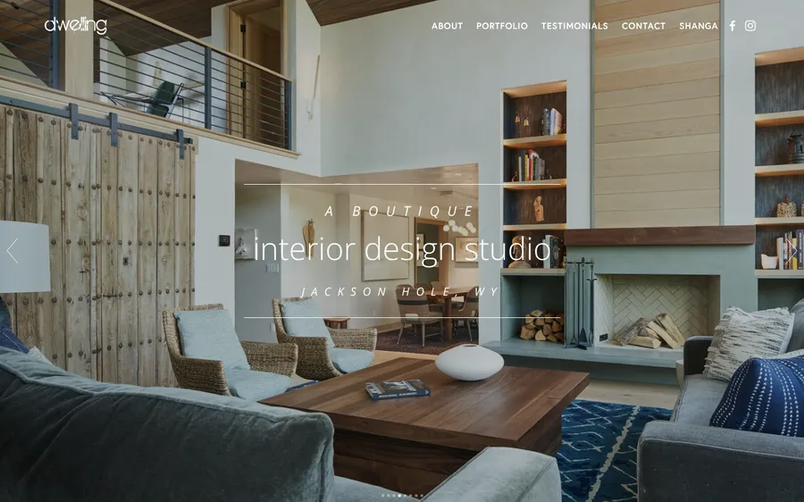

Services · Digital & web
Websites built to reflect the brand and support business goals.
A website should communicate clearly, reflect the brand faithfully and help move the business forward. Whether the priority is credibility, storytelling or leads, we design and build sites that look sharp and work with purpose.
Why it matters
The website is often the first real interaction someone has with the brand.
In a few seconds it has to build trust, explain the value and point to the next step. If it’s unclear, outdated or hard to use, the business pays in attention and credibility. A strong site creates clarity for the audience and leverage for the business.
What we offer
Let’s talk +01
Website design
Built around your audience, content and goals.
- Site architecture
- UX research and wireframes
- Responsive UI design
- Content planning
- Conversion strategy
02
Web development
Built on the platform that fits how you work.
- Webflow
- WordPress
- Squarespace
- Shopify
- CMS integration
- SEO setup
- Performance optimization
03
Landing pages
One page, one goal, for a launch or campaign.
- Product launches
- Paid media
- Lead generation
- Events and promotions
04
UX/UI audits
A clear review of your current site, with fixes in order.
- User experience issues
- Conversion barriers
- Navigation and content gaps
- Mobile usability
05
Design systems
Components and standards that keep a growing site consistent.
- Component libraries
- Layout systems
- UI kits
- Style guides
06
Copy & content
The words and structure that make a site work.
- Website copywriting
- Page structure
- Headlines and CTAs
- Brand messaging alignment
Recent websites
All work +
Peace Park · Websites
Peace Park
Website for an annual gathering of the world's best snowboarders.

Mountain Mind Project · Websites
Mountain Mind Project
A full redesign for a mindfulness training company, with our own photography.

Snapshot · Websites
Hines Goldsmiths
An online store for a Jackson Hole fine jewelry and glassware shop, so customers can buy direct.

Snapshot · Websites
Jackson Hole Public Art
A complete redesign for a nonprofit, built around public art events, art opportunities and donations.

Snapshot · Websites
Dwelling
A rebuilt site for a Jackson Hole interior design studio with a Mountain Modern look.
A strong fit for
Launching a new site
A first site, or a new brand that needs one.
Outdated or underperforming sites
A site that no longer explains what you do.
Stronger credibility
For businesses that need to look as good as their work.
Portfolio and story-driven sites
For studios, agencies and brands with work to show.
A growth push
A rebrand, a campaign launch or a new offer.
From structure to launch
No unnecessary complexity. A structured process built on clarity and collaboration.
Discover
Goals, audience needs, content priorities and technical realities.
Structure
Site architecture, page hierarchy and user flow.
Design
The visual system and page layouts, built for clarity and usability.
Build
Developed for responsiveness, performance and real-world use.
Launch & refine
Rollout, optimization and what to add next.
Why Dunn Creative
Strategy, design and development, working together.
Many web projects stall because design, content and development are handled separately. We run them as one process, so the site is polished, on strategy and easier to manage over time.
Build a website that looks sharp and works hard.
New site, redesign, campaign page or a fix to what you have. Stronger presence, clearer communication, better performance.